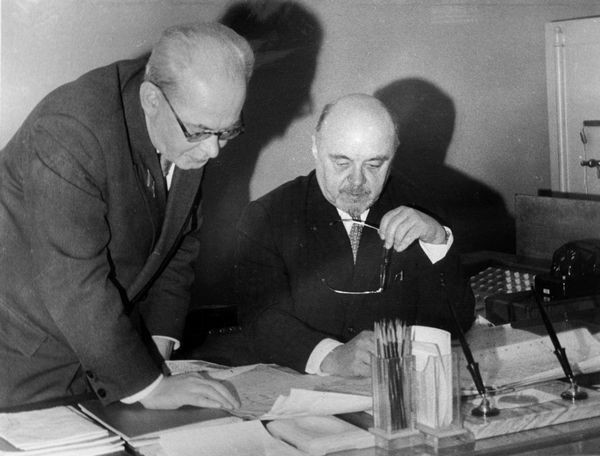
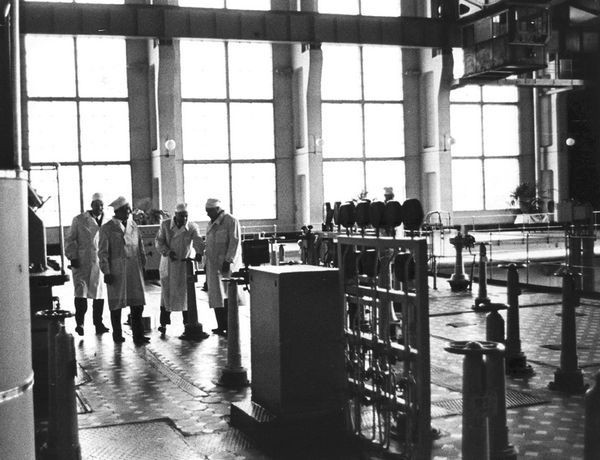
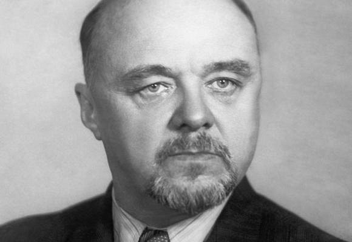

Н.А. Доллежаль и Онищенко

Е.П. Славский и Н.А. Доллежаль

Доллежаль на первой в мире АЭС в Обнинске

Николай Антонович Доллежа́ль(1899—2000) — советский учёный-энергетик, конструктор ядерных реакторов, профессор, Академик АН СССР . Дважды Герой Социалистического Труда . Лауреат трёх Сталинских, Ленинской и двух Государственных премий СССР. Разработал теорию самодействующих клапанов поршневого компрессора. Главный конструктор реактора первой в мире атомной электростанции.
Родился 27 октября 1899 года в семье земского инженера-путейца Антона Фердинандовича Доллежаля в селе Омельник. С 1913 года жил в Подольске, где учился в училище.
В 1917 году поступил в МВТУ и в 1923 году окончил его по специальности инженера-механика. В 1925—1930 годах работал в проектных организациях.
В 1929 году стажировался в Европе (в Германии, Чехословакии, Австрии). Вскоре после возвращения, в октябре 1930 года был арестован органами ОГПУ СССР и находился полтора года в тюрьме под следствием. Обвинялся в связях с «вредителями», арестованными по делу «Промпартии». В январе 1932 года освобождён без предъявления обвинения.
В октябре 1934 года переведен на работу в «Химмаштрест» (Харьков) главным инженером и заместителем управляющего. В апреле 1935 года назначен членом Технического совета при Наркомате тяжелой промышленности, в ноябре того же года — главным инженером завода «Большевик» (Киев), откуда в июне 1938 года переведен в «Главхиммаш» (Москва) заместителем главного инженера.
Н.А. Доллежаль и Онищенко
Е.П. Славский и Н.А. Доллежаль
Доллежаль на первой в мире АЭС в Обнинске
В 1943 году возглавил НИИ химического машиностроения. С 1946 года Доллежаль и его НИИ были привлечены к советскому атомному проекту, проектируя первые промышленные ядерные реакторы для производства оружейного плутония («агрегаты А», «АИ») — водографитовые установки с вертикальным расположением графитовых колонн и каналов водяного охлаждения. После успешных испытаний атомной бомбы летом 1949 года приступил к разработке энергетических реакторов для корабельных установок. В 1954 году под руководством Доллежаля был разработан первый проект реакторной установки для подводных лодок, водо-водяной схемы. В том же году вступила в строй первая в мире АЭС в Обнинске, сердцем которой был «агрегат АМ» — первый в СССР канальный ядерный реактор (водографитовой схемы).
В 1952 году Доллежаль возглавил «Специальный институт», он же НИИ-8 (нынешний НИКИЭТ), созданный для конструирования реакторов всех типов, и руководил им 34 года. Институт Доллежаля проектировал реакторы всех основных типов — энергетические, промышленные, исследовательские. В 1958 году был пущен в эксплуатацию двухцелевой реактор ЭИ-2 (Сибирская АЭС) — вырабатывавший энергию в промышленных масштабах и оружейный плутоний. В 1964, 1967 годах пущены реакторы серии АМБ Белоярской АЭС — первой «большой» АЭС в советской энергетике. Впоследствии институт Доллежаля и институт Курчатова совместно создали двухцелевые (позже чисто энергетические) реакторы РБМК.
Отечество высоко оценило заслуги действительного члена АН СССР и РАН Н.А. Доллежаля — одного из основоположников атомных энергетики и промышленности страны, первопроходца реакторостроения. Он — дважды Герой Социалистического Труда, лауреат Ленинской, 3-х Сталинских и 2-х Государственных премий СССР, кавалер многих орденов и медалей, в том числе российского ордена «За заслуги перед отечеством» 2-й степени, которым был награжден в свой 100-летний юбилей. За большой вклад в атомную науку удостоен также золотой медали им. И.В. Курчатова Российской академии наук.
Н.А. Доллежаль умер 20 ноября 2000 года. Похоронен на кладбище села Козино Одинцовского района Московской области.

Памятник учёному-конструктору Николаю Антоновичу Доллежалю
В 1986 году Доллежаль был отправлен на пенсию как (неофициальный) виновник катастрофы на Чернобыльской АЭС. Своей вины до конца жизни Доллежаль не признавал и считал, что реакторы типа РБМК соответствуют всем нормам безопасности.
Бюст Николая Доллежаля в городе Орехове